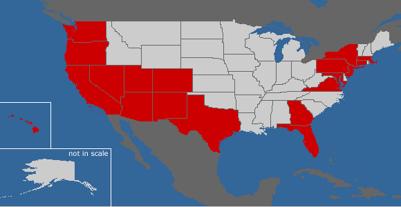

Places I have been to:

My travel logs:
| Arizona |
|
| California: |
|
| Colorado: |
|
| Connecticut: |
|
| Florida: |
|
| Georgia: |
|
| Washington DC: | Summer 2011, Winter 2008 |
| Maryland: | Winter 2008: Baltimore, Rockville |
| Massachusetts: | Summer 2013, Winter 2008: Boston |
| Nevada: | Winter 2010: Las Vegas |
| New York: | Winter 2009: Buffalo, Niagra Falls, NYC, Ithaca |
| New Jersey: | Princeton, New Brunswick, Basking Ridge, Morristown |
| New Mexico: | Summer 2009: Albuquerque, Los Alamos, Santa Fe, Taos |
| Pennsylvania: | Summer 2011, Winter 2008: Philadelphia |
| Virgina: | Summer 2011: Arlington |
| Utah: | Summer 2009: Arches NP, Canyonlands NP, Bryce Canyon NP, Zion NP |
| Washington: | Summer 2012, summer 2013: Mount Rainier NP, Olympic NP, Seattle |
| Hawaii: | Fall 2012: Oahu, Maui |
| Texas: | Spring 2013: Dallas |
| Oregon: | Summer 2013: Portland |
Least-visited national parks
Do you know America's least-visited national parks ? ☺